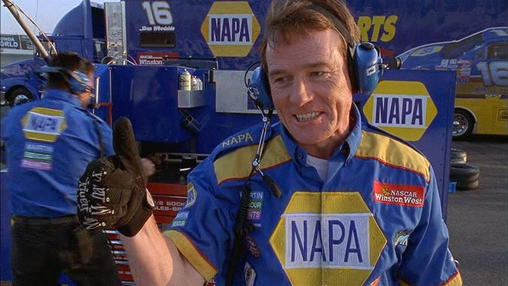
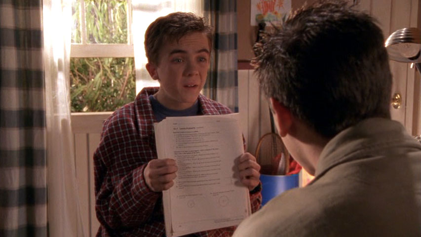
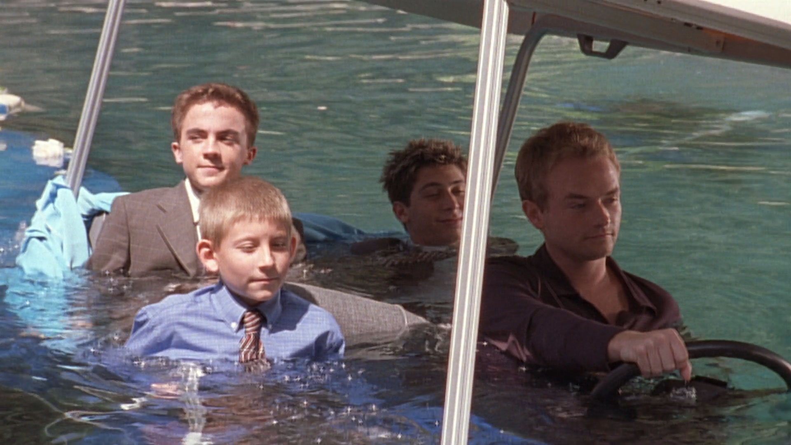
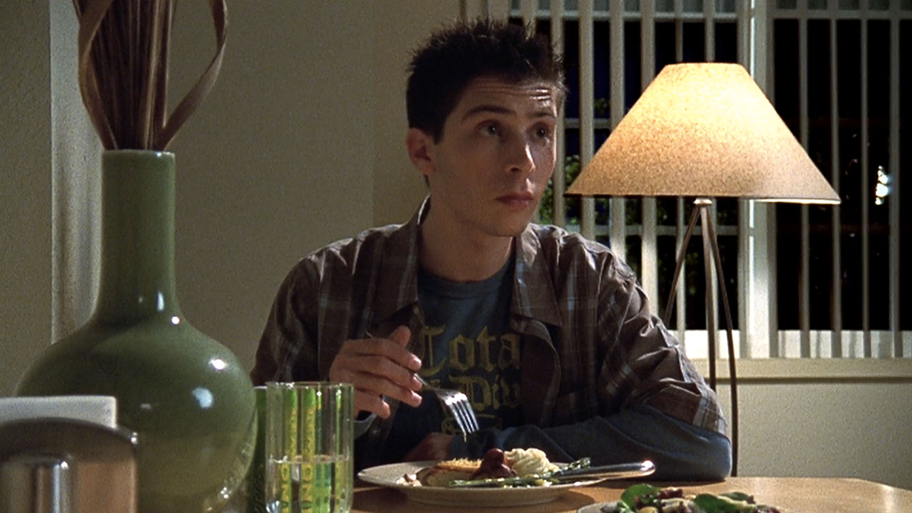
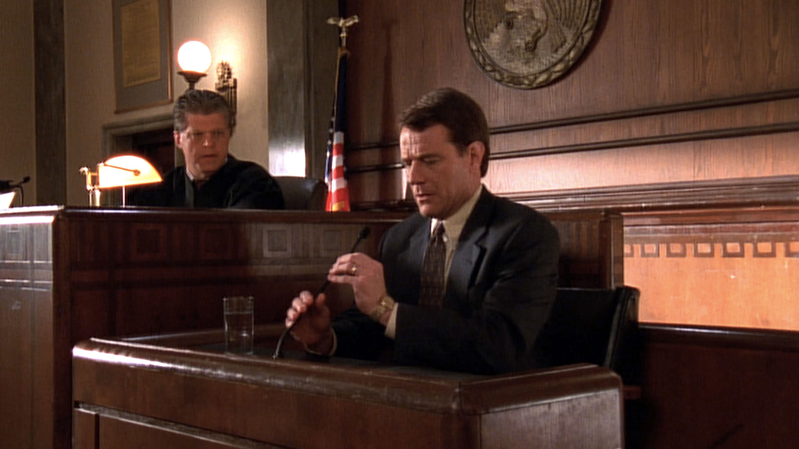
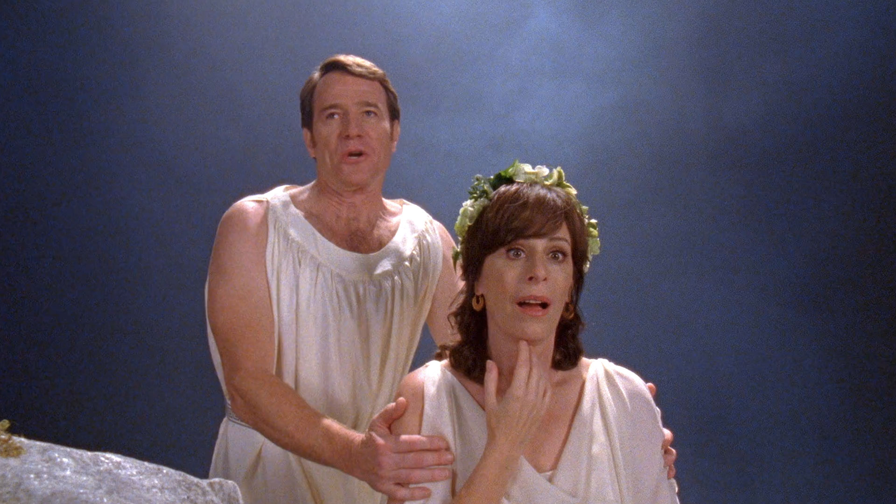
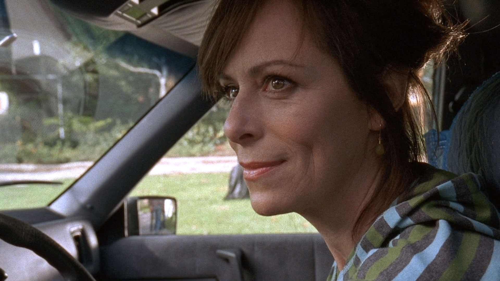

Saisons
Tous les épisodes de la saison 1 à 7
-
Épisode 1 - Je ne suis pas un monstre
Malcolm, découvre qu'il est atteint d'un mal incurable : il a un QI de 165 !
-

Épisode 2 - Alerte rouge
Lois et Hal fêtent leur anniversaire de mariage. Mais Lois découvre sa robe de soirée brûlée...
-
Épisode 3 - Seuls à la maison
Lois et Hal confient à Francis la garde des trois enfants pour le week-end.
-
Épisode 4 - Honte
Malcolm est rongé par le remords quand il apprend qu’il a frappé un enfant de sept ans.
-
Épisode 5 - Changement de famille
Malcolm est engagé comme baby-sitter dans une famille riche avec une somptueuse villa.
-
Épisode 6 - Poquito cabeza
Francis devient la cible de cinq terminales surnommés les frères de l'apocalypse.
-
Épisode 7 - La petite évasion
Francis décide de fuguer de son école militaire pour rejoindre sa bien-aimée.
-
Épisode 8 - Panique au pique-nique
La classe de Malcolm organise un pique-nique où sont conviées les familles des « têtes d'ampoule ».
-
Épisode 9 - Ma mère, ce héros
Le patron de Lois se sert du prétexte d'un vol de Dewey pour la licencier du Lucky Aide.
-

Épisode 10 - À fond la caisse
Hal emmène les garçons voir une course automobile, les faisant sécher l'école.
-
Épisode 11 - Les funérailles
La famille doit se rendre aux funérailles de tante Helen, « dévorée par ses chats ».
-
Épisode 12 - Pom pon boy
Reese intègre le groupe de pom-pom girls pour séduire une fille dont il est tombé amoureux.
-
Épisode 13 - Le mot de trop
Malcolm décide de prendre des cours de rollerskates auprès de son père, ancien champion de patins.
-
Épisode 14 - Le robot-tueur
Lois part au chevet de Francis, opéré d'une appendicite, laissant Hal esseulé à la maison avec les garçons.
-
Épisode 15 - Lundimanche
Malcolm, Reese et Dewey profitent de leur mère alitée à cause d'une grippe pour ne pas aller à l'école.
-
Épisode 16 - Le liquidateur
Lois et Hal partent avec Malcolm et Reese dans un parc aquatique, laissant Dewey entre les mains d'une baby-sitter.
-
Épisode 1 - Embouteillage
Expulsés du parc aquatique, la famille se retrouve coincée dans un embouteillage monstre.
-

Épisode 2 - Il n'y a pas d'heure pour Halloween
Francis est de retour à la maison et compte bien fêter Halloween avec ses frères.
-
Épisode 3 - Joyeux anniversaire Lois
Devant le manque évident d'intérêt que représente son anniversaire, Lois décide de quitter la maison.
-
Épisode 4 - Dîner en ville
Pour faire plus ample connaissance, Abe et Kitty, les parents de Stevie, invitent Malcolm et sa famille au restaurant…
-
Épisode 5 - Faites vos jeux
La famille se rend dans un hôtel-casino pour un petit séjour de vacances.
-
Épisode 6 - Le congrès
Hal et Lois passent la soirée à une convention de l’entreprise d’Hal, et confient les garçons vont rester à une baby-sitter…
-

Épisode 7 - Attaque à main armée
Lois se fait braquer au magasin par deux bandits, à quelques minutes de la fin de son service.
-
Épisode 8 - Thérapie
Malcolm s'invente des troubles psychologiques pour échapper à une représentation sur scène.
-
Épisode 9 - Malcolm brûle les planches
Malcolm se porte volontaire pour être figurant dans une pièce de théâtre. Devant son talent, le metteur en scène lui offre le premier rôle.
-
Épisode 10 - Le grand méchant Reese
Après s'être fait battre par une fille dans un match de lutte, Reese perd tous ses moyens et décide de devenir doux comme un agneau.
-
Épisode 11 - La vieille dame
Malcolm casse accidentellement le bras de sa voisine, une vieille dame particulièrement acariâtre.
-
Épisode 12 - La nouvelle tête d'ampoule
La classe des « têtes d'ampoule » accueille une nouvelle élève, Cynthia, qui a un comportement pour le moins étrange...
-
Épisode 13 - Les nouveaux voisins
Malcolm et sa famille fait connaissance avec ses nouveaux voisins lors d’un barbecue...
-
Épisode 14 - Hal démissionne
Humilié devant la classe de Dewey, Hal décide de quitter son job afin d'assouvir sa passion : la peinture.
-
Épisode 15 - Conflit de générations
Hal et Lois ont la (mauvaise) surprise de voir débarquer Ida et Victor, les parents de Lois.
-
Épisode 16 - Infraction
Lois est arrêtée par un policier pour une infraction routière qu'elle aurait commise.
-
Épisode 17 - Urgences
Malcolm est conduit à l'hôpital après des douleurs à l'estomac, où le médecin lui diagnostique une crise d'appendicite.
-
Épisode 18 - Reese aux fourneaux
Désespérés par ses résultats scolaires, Lois et Hal emmènent leur fils Reese suivre des cours de cuisine.
-

Épisode 19 - Cours du soir
Lois ordonne à Malcolm d'aider son grand frère, sans quoi Reese risquerait de se retrouver dans une section de remise à niveau.
-
Épisode 20 - Pile et face
Malcolm et Reese doivent se rendre au bowling pour la soirée : Lois vs. Hal se proposent de les accompagner.
-
Épisode 21 - Malcolm contre Reese
Francis met ses deux frères Malcolm et Reese en concurrence pour savoir qui il va emmener avec lui voir un match de catch.
-
Épisode 22 - Un pour tous
Malcolm, Reese et Dewey découvrent une petite moto. Ensemble, ils passent tout leur temps libre à la réparer.
-
Épisode 23 - Fête foraine
Malcolm, Reese, Dewey et Stevie font le mur de chez eux pour se rendre à la fête foraine.
-
Épisode 24 - Débâcle
Toutes les familles de la ville se retrouvent abrités au gymnase à la suite d'une fuite de gaz indirectement provoquée par Hal et Dewey...
-
Épisode 25 - Souvenirs, souvenirs
Pensant être enceinte, Lois fait un test de grossesse. L'occasion de se souvenir avec Hal de ses autres accouchements...
-
Épisode 1 - Tout le monde sur le pont
La famille de Malcolm part en vacances avec la famille de Stevie sur un bateau.
-
Épisode 2 - Émancipation
Francis vient de quitter l'école militaire et va retrouver ses parents. Lois ne lui pardonne pas son geste et feint de l'ignorer.
-
Épisode 3 - Feux d'artifice
Lois décide de prendre un peu de bon temps et s'inscrit à un club de lecture pour femmes.
-

Épisode 4 - La petite amie
Malcolm est amoureux fou de la jolie Sara : il sort ainsi avec sa toute première petite amie.
-
Épisode 5 - Bonnes œuvres
Lois inscrit Malcolm, Reese et Dewey comme volontaires dans une association caritative.
-
Épisode 6 - Sueurs froides
Lors d'un examen de routine, on a constaté un état de santé chez Hal qui relève quelques inquiétudes.
-
Épisode 7 - Chantage de Noël
Lois force Francis à passer Noël chez sa grand-mère Ida, toujours aussi détestable.
-
Épisode 8 - Poker
Alors que Lois avait prévu d'emmener Hal avec elle à son premier cours de danse, Hal est invité par Abe à une partie de poker.
-
Épisode 9 - Le poisson rouge
Lois et Hal ont promis à Dewey de lui acheter un chien s'il parvient à s'occuper correctement d'un poisson rouge pendant deux mois.
-
Épisode 10 - Sexy Lois
Lois est critiquée à son travail pour son aspect négligé. Elle est conduite au rayon maquillage du magasin où on la relooke.
-
Épisode 11 - Pique-nique fatal (1ère partie)
Hal emmène toute la famille au pique-nique annuel de son travail.
-
Épisode 12 - Pique-nique fatal (2ème partie)
Toute la famille (sauf Francis) est au pique-nique organisé par l’entreprise d’Hal pour célébrer l’arrivée du nouveau patron.
-
Épisode 13 - Le fou du volant
Reese s'apprête à passer le permis de conduire. Lois et Hal, d'abord réticents, doivent s'y résigner.
-
Épisode 14 - Confessions intimes
Cynthia est de retour d'Europe, et se montre particulièrement méprisante et distante avec les « têtes d'ampoule », sauf Malcolm.
-

Épisode 15 - La grosse surprise
Francis revient à la maison pour l'anniversaire de Hal. Il ne vient pas seul : il est accompagné de Piama, sa femme !
-
Épisode 16 - L'entraîneur
Hal remplace l'entraîneur de football de l'équipe de Dewey, avec pour seul mot d'ordre : le plaisir !
-
Épisode 17 - Une vie de chien
Sur le chemin de l'école, Dewey trouve un chien errant qu'il prend sous son aile, et le baptise Montecristo.
-
Épisode 18 - Poker II, la revanche
C’est au tour d’Hal de recevoir chez lui Abe, Trey, Malik, Brian et Steeve pour une partie de poker.
-
Épisode 19 - Morceaux choisis
Hal emmène les enfants chez un psy dans l’espoir qu’ils changent enfin de comportement.
-
Épisode 20 - Messieurs les jurés
Lois est convoquée pour être jurée dans un tribunal, idée qui ne l'enchante guère.
-

Épisode 21 - Réactions en chaîne
Dewey a la varicelle. Pour le distraire de sa maladie, Lois offre à son fils des centaines de dominos.
-
Épisode 22 - Héros malgré lui
La famille est victime d’un cambriolage en pleine nuit. Reese assomme et maîtrise héroïquement le cambrioleur…
-
Épisode 1 - Zizanie au zoo
En pleine crise d'adolescence, Malcolm se morfond, et la perspective de passer la journée au zoo ne l'enchante guère.
-
Épisode 2 - Humilithon
Malcolm entre au lycée. Une occasion inespérée pour lui de ne plus être étiqueté « tête d'ampoule ».
-

Épisode 3 - Famille, je vous hais
Toute la famille est invitée par Claire, la sœur de Hal, pour l'anniversaire de leur père Walter.
-
Épisode 4 - Sois belle et tais-toi
Malcolm a des vues sur Alison, une élève du lycée. Mais sa technique de séduction est bien trop élaborée, d'autant plus qu'Alison ne comprend absolument rien au second degré.
-
Épisode 5 - C'est pas moi, c'est lui !
Hal tient à offrir à Malcolm une bande dessinée pour son anniversaire. N'y connaissant rien, il fait appel à Craig.
-
Épisode 6 - Touche pas à ma fille
Malcolm donne des cours de rattrapage à des élèves en difficultés. Il rencontre Nikki, avec qui il entame très vite une relation.
-
Épisode 7 - Bouche cousue
Renvoyé pour insolence par l'entraîneur de l'équipe de basket-ball, Malcolm décide de tenir sa langue au lieu de répondre systématiquement à toute remarque.
-
Épisode 8 - Les mystère de l'Ouest
Malcolm, Reese et Dewey partent en week-end au Texas avec leur père pour rendre visite à Francis dans le ranch Grotto.
-
Épisode 9 - Grand-mère attaque
Au moment de partir de la maison familiale où elle était hébergée, Isa glisse sur une feuille d'arbre et se blesse, prolongeant de fait son séjour.
-
Épisode 10 - Si les garçons étaient des filles
La famille passe la journée au centre commercial. Hal doit en profiter pour trouver un cadeau de Saint-Valentin.
-
Épisode 11 - Tu seras un homme mon fils
Lois profite d'un long trajet en voiture avec Malcolm pour lui faire son éducation sexuelle.
-
Épisode 12 - Tolérance zéro
Enceinte, Lois est partie se reposer chez sa sœur. Du coup, c’est Hal qui gère la maison, aidé par Craig.
-
Épisode 13 - Sexe, mensonge et vidéo
Pour joindre les deux bouts pendant le congé de sa femme, Hal est obligé de cumuler deux boulots…
-

Épisode 14 - Le bon copain
Hal profite de l’absence de Lois pour revoir Larry, son meilleur ami de jeunesse.
-
Épisode 15 - Le grand déballage
La famille cherche une solution pour financer les travaux de la chambre du bébé. Ils organisent un vide-grenier.
-
Épisode 16 - Les grands esprits se rencontrent
Malcolm est enrôlé contre son gré par M. Herkabe à un concours de connaissances inter-écoles.
-

Épisode 17 - Le testament impossible
Lois et Hal se lèvent en pleine nuit pour rédiger leur testament, dans le but de faciliter les choses au cas où il arriverait le pire.
-
Épisode 18 - Plus on est de fous, plus on rit
À l'approche de l'arrivée du bébé, Lois et Hal s'offrent un dernier week-end en amoureux.
-
Épisode 19 - Mise à nu
Malcolm est provoqué par un joueur d’échec de la cinquantaine nommé Léonard.
-
Épisode 20 - Le bébé (1ère partie)
Pour leur changer les idées avant la venue du bébé, Hal décide d’emmener ses fils au salon de l’automobile...
-

Épisode 21 - Le bébé (2ème partie)
À peine Hal et les garçons libérés par la sécurité du salon du mariage, Hal a un accident qui le mène directement à l’hôpital…
-
Épisode 22 - Les arnaqueurs
Lois a urgemment besoin de quelqu’un pour s’occuper du bébé. Lois a alors l’idée de joindre la famille à une communauté religieuse.
-
Épisode 1 - Las Vegas
Hal confie à Malcolm un rêve qu’il pense prémonitoire où il gagne le jackpot à une machine à sous.
-
Épisode 2 - Les baby-sitters
À cause du bébé, Lois enchaîne les nuits blanches et commence à être complètement crevée.
-
Épisode 3 - Le journal intime
Abe annonce à Lois et Hal que Kitty l’a quitté il y a deux mois et ne reviendra plus jamais.
-
Épisode 4 - Le grand chef
La famille se prépare à fêter Thanksgiving. Francis et Piama viennent exprès pour l’occasion…
-

Épisode 5 - Caméra cachée
Herkabe charge Malcolm de réaliser un documentaire sur Reese en caméra cachée.
-
Épisode 6 - Cachotteries
Lois oblige Malcolm et Reese à se trouver un job.
-
Épisode 7 - Mes beaux sapins
Hal est mis au chômage technique pendant les trois semaines de fêtes de fin d'année.
-
Épisode 8 - C'est la fête !
La famille rentre plus tôt que prévu de vacances et découvre qu'une fête de quartier a lieu chaque année en leur absence.
-
Épisode 9 - Rubrique lubrique
Malcolm devient le rédacteur en chef du magazine littéraire du lycée.
-

Épisode 10 - Le jacuzzi de la discorde
Hal achète sans le consentement de Lois un jacuzzi.
-
Épisode 11 - Le fiancé de grand-mère
Ida vient annoncer à la famille qu’elle s’est fiancée à un certain M. Li, rencontré au cours d’une croisière.
-
Épisode 12 - Frapper et recevoir
Malcolm s'inscrit au club de base-ball du Lucky Aide, sans savoir que sa mère en est l'entraîneuse !
-
Épisode 13 - La sœeur de Lois
Lois est extrêmement nerveuse, car sa sœur Susan vient passer quelques jours à la maison.
-
Épisode 14 - Belle famille, je vous aime
Malcolm se met à fréquenter Angela, une jeune fille à la réputation d'avoir une famille extravagante qui fait subir un véritable interrogatoire à chacun de ses petits copains.
-

Épisode 15 - Enfin seul !
Après une violente dispute avec les parents, Reese quitte la maison, et se trouve un appartement.
-
Épisode 16 - Portes ouvertes
Lois accompagne Malcolm dans la visite d'une université.
-

Épisode 17 - Chance et malchance
Hal tente d'arranger le coup entre son ami Abe et la baby-sitter de Jamie, Polly, sans savoir que Lois a fait de même avec son collègue Craig.
-
Épisode 18 - Q.I. KO
Lois annonce à la famille que Dewey va, à son tour, passer un test de QI.
-
Épisode 19 - Formules magiques
Malcolm et Stevie tentent une expérience qui peut les conduire à être acceptés dans les plus grandes facultés des États-Unis.
-
Épisode 20 - Patrimoine (et) génétique
Lois fait la connaissance de sa belle-sœur, née de la relation extraconjugale de son père Victor.
-
Épisode 21 - La grande pagaille (1ère partie)
Hal est poursuivi par le FBI dans une affaire de malversations survenues au sein de son entreprise.
-

Épisode 22 - La grande pagaille (2ème partie)
Hal s'apprête à passer au tribunal. Il tombe des nues devant les accusations qu'on lui porte.
-
Épisode 1 - Il faut sauver le soldat Reese
Reese, fraîchement débarqué par avion en Afghanistan, prend la poudre d'escampette lors d'un combat.
-
Épisode 2 - Les idoles
Mme Welsh annonce la disparition de tous les élèves de la classe d’adaptation dans laquelle Dewey venait de sortir.
-
Épisode 3 - La guerre des poubelles
Hal entre en conflit avec un éboueur qui refuse d'embarquer son arbre à chat géant.
-
Épisode 4 - Pearl Harbor
Manipulés par Jessica, Malcolm et Reese se croient mutuellement homosexuels.
-
Épisode 5 - Kitty : le retour
Après deux ans d’absence et de débauche, Kitty réapparaît brusquement.
-
Épisode 6 - L'étrange Noël de Monsieur Hal
Suite à un accrochage dans un parking entre Lois et une autre femme, la famille est à court d'argent pour Noël.
-
Épisode 7 - Le somnambule
Stressé par l'approche du vingtième anniversaire de son mariage avec Lois, Hal fait des crises de somnambulisme.
-
Épisode 8 - Servir et protéger
Lois est épuisée par Jamie, particulièrement nerveux et intenable, et qu'elle a beaucoup de mal à maîtriser.
-
Épisode 9 - Accro au delco
Malcolm s'achète un vieux tacot qu'il remet en état, au point de devenir dangereusement accro à sa voiture.
-
Épisode 10 - En haut de l'affiche
Malcolm, Reese, et Dewey s'apprêtent à tagguer un énorme panneau publicitaire faisant la promotion d'un club de strip-tease.
-

Épisode 11 - Opéra
Dewey veut écrire un opéra, mais ne trouve pas d'histoire pour le fil conducteur de sa mélodie.
-
Épisode 12 - Question de vie ou de mort
Hal découvre qu'il a été choisi par un voisin, aujourd'hui dans le coma, pour décider de ses dernières volontés.
-
Épisode 13 - On ira tous au paradis
Hal fait construire par ses enfants un salon privé relaxant dans le garage, pour que Lois et lui se retrouvent en fin de journée.
-
Épisode 14 - La jambe de grand-mère
En tentant de sauver Dewey d'un accident dans la rue devant la maison, Ida est amputée d'une jambe.
-
Épisode 15 - Devine qui vient dormir ?
Dewey invite son ami Chad à venir dormir à la maison, malgré l'interdiction de Hal...
-
Épisode 16 - Chose promise, chose due
Francis vient à la maison avec Piama pour fêter ses 21 ans.
-
Épisode 17 - Larves et chenilles
Reese se prend d'affection pour des chenilles qu'il doit répandre dans des jardins, et les cache dans le garage.
-

Épisode 18 - Quelle horreur !
Lois découvre alors que sa mère s'apprête à participer à une fête folklorique d'Europe de l'Est.
-
Épisode 19 - J'ai échangé ma maman
Hal assiste à un séminaire de motivation, et devient par accident le nouveau coach de la réunion de groupe pour son entreprise.
-
Épisode 20 - 800 dollars plus les frais
Malcolm doit porter le costume de l'Oncle Sam, sur des échasses devant le Lucky Aide, pour faire la promotion des produits du magasin.
-
Épisode 21 - Otage, ô désespoir
Dewey découvre que ses camarades de classe ont pris en otage leur professeur.
-
Épisode 22 - Reine d'un jour
Malcolm, Reese et Dewey font une blague à leur mère en l'inscrivant au concours de Madame Trois-Comtés.
-
Épisode 1 - Allumer le feu !
Malcolm et Reese préparent une fugue pour se rendre enfin au festival de
-
Épisode 2 - Assurances tous risques
Hal sombre dans la paranoïa quand il apprend que sa famille n’a plus d’assurance maladie.
-
Épisode 3 - Vices cachés
Reese annonce à Stevie qu'il compte se battre avec lui, pour se venger des fois où il se moque de lui.
-
Épisode 4 - La maison de l’horreur
Hal et les garçons découvrent que la maison a été le théâtre d’un massacre avant qu'ils ne l'achètent.
-
Épisode 5 - L’invasion de l’abeille tueuse
Lois propose à Jessica, en proie à des problèmes familiaux, de s'installer à la maison quelques temps.
-

Épisode 6 - La guerre des nerfs
Malcolm découvre que Vicky, la fille la plus populaire de sa classe, l'a choisi comme binôme en sciences.
-
Épisode 7 - Le côté obscur
Hal et Lois se préparent à fêter leur anniversaire de mariage, quand une panne d'électricité générale survient.
-
Épisode 8 - Copine de régiment
Reese reçoit la visite d'une ancienne amie qu'il a connu pendant son service militaire.
-
Épisode 9 - Il faut sauver l’élève Reese
M. Herkabe a fait de Reese sa tête de turc et prend un malin plaisir à l’humilier devant les autres élèves.
-
Épisode 10 - L’argent ne fait pas le bonheur
Lois et Hal utilisent provisoirement la dote de 10 000 dollars destinée aux études de Malcolm.
-
Épisode 11 - L’épreuve de force
Lois et Hal accompagnent Dewey à St Louis pour un concours de piano.
-
Épisode 12 - La force de l’engagement
Malcolm refuse d'accorder une entrevue à un recruteur d'université, malgré les sollicitations de Hal.
-
Épisode 13 - Mononucléose à deux
Lois découvre qu'elle a la mononucléose. Elle transmet la maladie à Malcolm, les rendant tous deux contagieux.
-
Épisode 14 - Hal déprime
Hal ne ressent aucune tristesse suite à la mort de son père.
-
Épisode 15 - Tous coupables !
Lois et Hal partent pour le week-end chez Francis qui fête sa première année de sobriété aux alcooliques anonymes.
-

Épisode 16 - La justicière
Reese est victime d'une mauvaise blague de quatre filles populaires au lycée...
-
Épisode 17 - Une dent contre toi
Hal a besoin de se faire soigner une dent. Trey, le dentiste de son groupe d'amis de poker, lui propose de s'en charger.
-
Épisode 18 - L’abri de mes rêves
Pour ne pas être punis, Reese et Dewey enferment Hal dans un abri antiatomique qu'ils viennent de découvrir dans le jardin.
-
Épisode 19 - Un vendeur est né
Stevie vient d’être opéré. Malcolm planifie de lui rendre une petite visite à l’hôpital, mais le sort semble s’acharner à l’en empêcher...
-

Épisode 20 - Le tribunal des animaux
Reese rencontre une fille végétarienne. Il va tenter de cacher ses habitudes alimentaires très carnivores à sa nouvelle copine.
-
Épisode 21 - Le bal de la promo
Pour fêter la fin des cours, le lycée organise un bal de fin d'année.
-
Épisode 22 - Malcolm président
Major de sa promotion, Malcolm doit préparer son entrée à Harvard et son avenir.